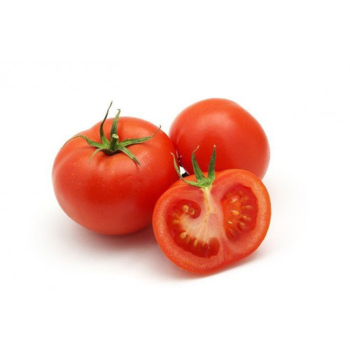
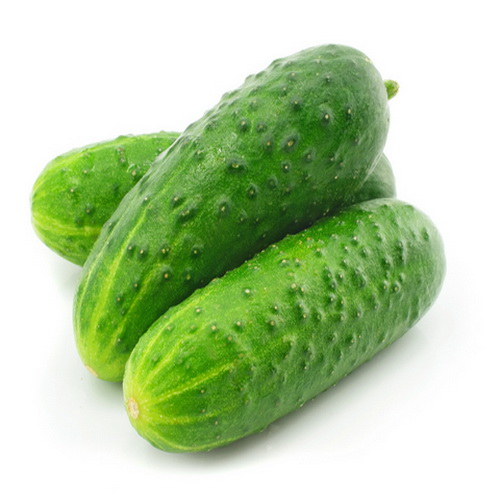
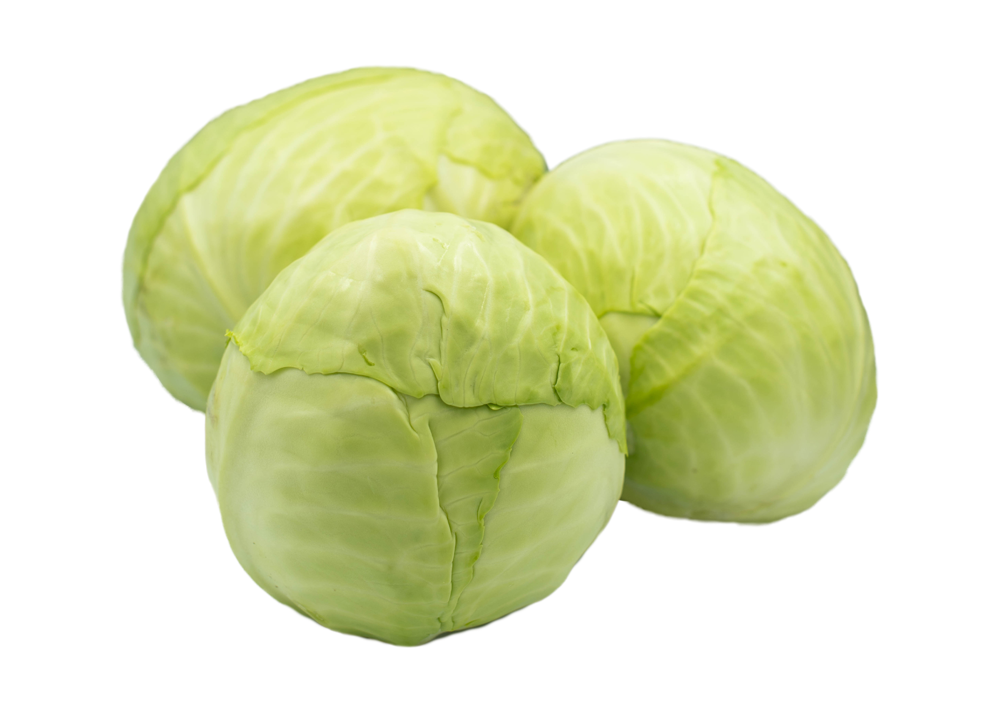

categories

potato
Карто́фель, или паслён клубнено́сный, — вид многолетних клубненосных травянистых растений из рода Паслён семейства Паслёновые.

tomato
Lycopersicon — род цветковых растений семейства пасленовых. В нем содержится около 13 видов томатной группы пасленовых.

cucumber
Огуре́ц обыкнове́нный, или Огурец посевно́й, — однолетнее травянистое растение, вид рода Огурец семейства Тыквенные, овощная культура.

cabbage
Капу́ста огоро́дная — одомашненное более 3500 лет назад двулетнее растение рода Капуста семейства Капустные, важная сельскохозяйственная культура, популярное овощное и декоративное растение.